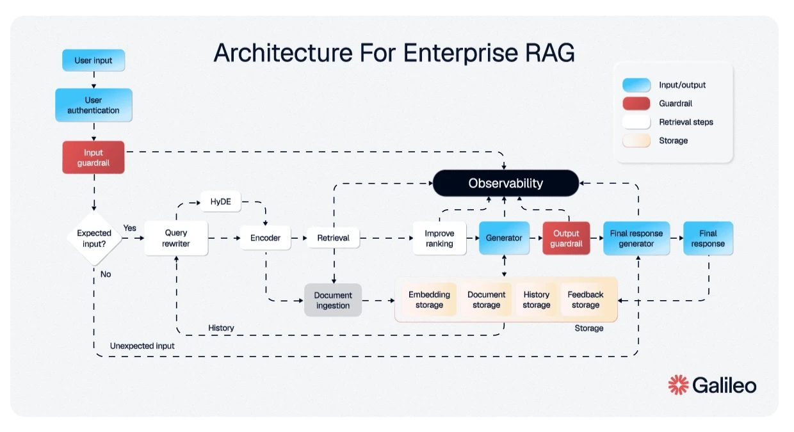
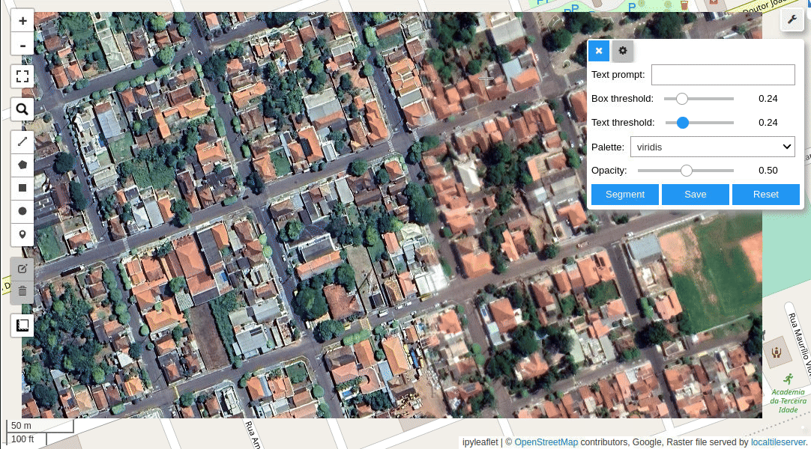

Portfolio
Specializing in Retrieval-Augmented Generation (RAG), LLM orchestrations, and scalable cloud backends. Bridging the gap between cutting-edge AI research and production-grade software.
I am a passionate Senior Generative AI and Full Stack Engineer with 3+ years of hands-on experience building production-grade AI/ML systems, Generative AI applications, LLM-powered pipelines, and scalable backend architectures.
Specialized in Retrieval-Augmented Generation (RAG), NLP, vector search, and Cloud-native deployments on GCP. I have a proven track record of delivering end-to-end AI platforms—from system design and API development to frontend deployment and production scaling.
My experience spans enterprise AI chatbot systems, Geospatial processing (ISRO), machine learning forecasting, and AI-driven EdTech platforms. I am adept at integrating large language models into real-world products to deliver measurable performance improvements.
Years Experience
AI/ML Projects
RAG Pipeline Latency
Cumulative GPA: 7.75 / 10
Presented on the SUFLAM research project, detailing the automation of Sentinel-1 satellite imagery pipelines for multi-band image classification of crop types across regional India.
Represented Codlyn Softwares Pvt. Ltd., engaging with industry leaders on AI integration, Generative AI standards, and scalable cloud architectures.
Participated in the developer event in Gurugram, Delhi NCR, focusing on advanced AI-assisted coding workflows and LLM development integration tools.

Architected production-ready Retrieval-Augmented Generation systems using LangChain, LlamaIndex, and ChromaDB. Optimized for sub-2-second latency across 5,000+ assessment workflows for EdTech platforms.

Built automated data preparation pipelines for Synthetic Aperture Radar (SAR) imagery. Utilized shapefiles and geojsons to extract geographical mosaics, significantly increasing throughput for remote-sensing.
Developed predictive models assessing creditworthiness using ensemble learning techniques to enhance classification accuracy and reduce false negatives in enterprise risk assessment scenarios.
Feel free to reach out for collaborations, generative AI system designs, or full-stack opportunities.